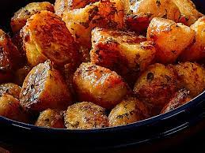

The Best Roast Potatoes!

Making the best Roasties
Roast potatoes are the staple of many a roast dinner and cooking them to perfection can sometimes be a case of trial and error.
Check out the steps below and you too can make roasties worthy of the greatest Roast dinners!
Ingredients
- 1kg Maris Piper potatoes
- 4 tablespoons of duck or goose fat
Steps
- Peel and cut 1kg of potatoes, put a saucepan of water on for boil, season with salt
- Once the water is boiling, put the chopped potatoes into the pot for 15mins. While they are boiling, add 4 tablespoons of goose / duck fat to a roasting tray
- After the potatoes have boiled for 15 mins, strain them and add back to the pot to dry them off further on a low heat
- Shake the potatoes around to fluff up the outsides and add to the roasting tray gently
- Cook for 70-80 mins, turning occasionally to give an even brown coating